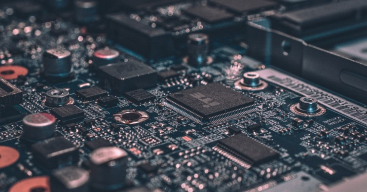

Moore's Law
Who is Gordon Moore?

Gordon Earle Moore is a well-respected American businessman, engineer, and former chairman of the multi-billion dollar technology company Intel. Born on January 3, 1929 in San Francisco and grew up nearby in Pescadero, California, he attended Caltech and received a B.S. degree and later a Ph.D. in chemistry, minoring in physics where ironically, he pursued and conducted "post doctoral research" at the Applied Physics Laboratory at John Hopkins University. He later joined MIT as well as the Shockley Semiconductor Lab division but left with the "traitorous eight" to found the Fairchild Semiconductor company. He is also the author of Moore's Law.
Moore's Law

Moore’s Law is idea that the number of transistors on a microchip will double every two years. Moore’s Law also states that we can expect that the speed of our computers will increase every couple of years.
History of Moore's Law
Moore's Law was first introduced in 1965 when Moore was asked to contribute to the 35th anniversary issue of the Electronics magazine. He was asked to make a prediction about the future of the semiconductor components over the next ten years. He responded saying that he believed that the number of components inside integrated circuits would double "every year for the next 10 years," following a log-linear relationship between device advancements and time. To many's surprise, the prediction was fairly accurate and 10 years later, Caltech professor Carver Mead coined the term we all know today as Moore's Law.
Ramifications of Moore's Law
During the late 20th and early 21st centuries, it has been apparent that there is a correlation between digital electronics to global economic stability, driven primarily by the growith of productivity. Moore's Law takes such productivity into account saying that "the rate of techonological progress is going to be controlled from financial realities." Therefore, as time passes, productivity growth would in effect, positively impact innovation. This is evident in the rapid acceleration of semiconductor growth, which resulted in a surge of US productivity, reaching a new peak of 3.4% per year in 1997-2004.
While Moore's Law predicts great advances in technology that positively affect the world, the very changes that promotes its growth can potentially be its downfall. As technology continues to grow, such improvements may one day be enough to disrupt the tred and render such antecedent technology as obsolete, especially for high-risk topics such as security and survivability of data.
Moore's Law and the Future

Gordon Moore himself believed that the projection would not last indefinitely, nor that it was on a rigid growth rate. "It can't continue forever," he stated in an April 2005 interview. "The nature of exponentials is that you push them out and eventually disaster happens." He also speculated that transistors would shrink to atomic levels within ten to twenty years.
A Student's Perspective
Moore's Law is still intact for now. Moore's law predicts that there should be about 60 billion transistors on a microchip at the end of 2020 and as of today, the GA100 Ampere which has the most transistors is sitting at about 54 billion transistors. Still, technology is drastically improving. As the world delves deeper into cloud/quantum computing, we are reaching a point where we simply cannot measure growth in the standards we are used to. Not to mention advancements in articifial intelligence. The future of technology has taken off and who knows how far it will go. Until then, Moore's Law will be a large predictor for such change.